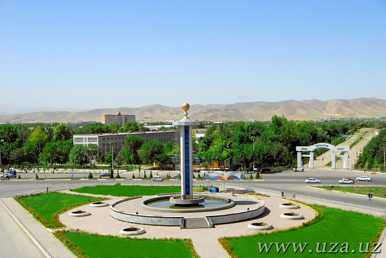

Jizzax viloyati
Jizzax viloyati – Oʻzbekiston Respublikasi tarkibidagi viloyat. Respublikaning markaziy qismida joylashgan. 1973-yil 28-dekabrda viloyat sifatida tashkil etilgan. Shimoliy-sharqda Qozogʻiston Respublikasi va Sirdaryo viloyati, janubi-gʻarbda Samarqand, Navoiy viloyatlari, janubi-sharqda Tojikiston Respublikasi bilan chegaradosh. Maydon 21,2 ming km2. Aholisi 1 mln 579 ming kishi (2026.07.01). Jizzax viloyatida 12 ta tuman bor: Arnasoy, Baxmal, Doʻstlik, Sharof Rashidov, Zarbdor (shahar), Zafarobod, Zomin (shahar), Mirzachoʻl, Paxtakor, Yangiobod, Forish, Gʻallaorol. 20 ta shahar va shaharchalar (Gagarin, Dashtobod, Doʻstlik, Jizzax, Marjonbuloq, Paxtakor, Gʻallaorol, Zarbdor, Zomin, Boʻston, Zafarobod, Oʻsmat, Uchquloch, Bogʻdon, Pishagʻar, Qoʻytosh, Sharq yulduzi, Arnasoy), 400 qishloq fuqarolari yigʻini bor (2022). Markazi – Jizzax shahri.
